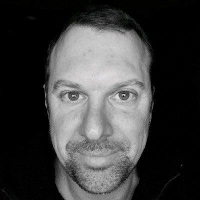

Transparence
Nous communiquons clairement sur les constats, les risques et les préconisations. Chaque rapport est rédigé en termes accessibles, sans jargon superflu.
Notre histoire
Fondée par Pierre-Jean Atger, ATG Conseil est spécialisée dans le diagnostic technique des bâtiments dans les domaines de la charpente, de la couverture, de l'étanchéité et de la sécurité des ouvrages.
Fort d'un parcours professionnel construit sur le terrain — d'ouvrier jusqu'à maître d'œuvre d'exécution au sein de différents bureaux d'études — Monsieur Atger apporte une vision globale et précise des problématiques liées au bâtiment, alliant expertise technique, connaissance pratique des chantiers et maîtrise des exigences réglementaires.
Notre mission est d'accompagner particuliers, professionnels, collectivités et gestionnaires de patrimoine dans l'analyse, le contrôle et la prévention des désordres pouvant affecter les structures et les enveloppes des bâtiments.
Nous intervenons sur les pathologies de charpente, les infiltrations, les défauts d'étanchéité, le vieillissement des couvertures ainsi que sur les questions de sécurité des ouvrages et des interventions.
Notre entreprise s'appuie sur des valeurs fortes :
"L'expertise du terrain au service de la sécurité et de la pérennité des ouvrages."

Nous communiquons clairement sur les constats, les risques et les préconisations. Chaque rapport est rédigé en termes accessibles, sans jargon superflu.
Chaque diagnostic est mené avec la même exigence, qu'il s'agisse d'un particulier, d'une PME ou d'une collectivité. La rigueur est non négociable.
Nous proposons des solutions adaptées aux réalités techniques et économiques de chaque client, pensées pour garantir la pérennité des constructions.
L'équipe
Une expertise individuelle, solide et engagée.
Fondateur — Expert diagnostic charpente & couverture
Issu du terrain, Pierre-Jean Atger a évolué d'ouvrier à maître d'œuvre d'exécution au sein de différents bureaux d'études. Cette double culture — pratique et technique — lui confère une capacité d'analyse unique, alliant vision globale et précision du détail.
Notre parcours
Création d'ATG Conseil par Pierre-Jean Atger, spécialisé dans le diagnostic technique des bâtiments : charpente, couverture, étanchéité et sécurité des ouvrages.
La satisfaction de nos clients témoigne de notre réactivité et de la qualité de notre accompagnement professionnel auprès de collectivités et gestionnaires de patrimoine.
Élargissement des expertises à l'étude sanitaire bois et à l'accompagnement de maîtrise d'ouvrage pour des projets plus complexes.
Bilan de 10 ans d'activité avec un taux élevé de satisfaction client et une reconnaissance croissante dans le secteur du diagnostic bâtiment indépendant.